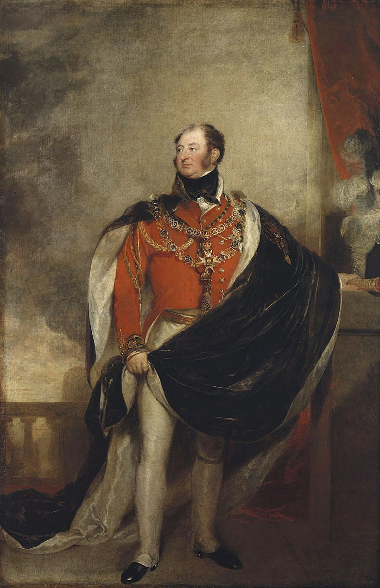
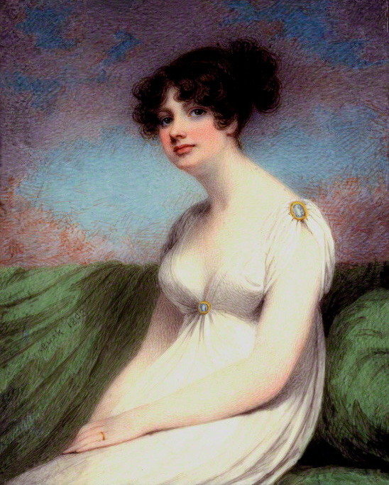
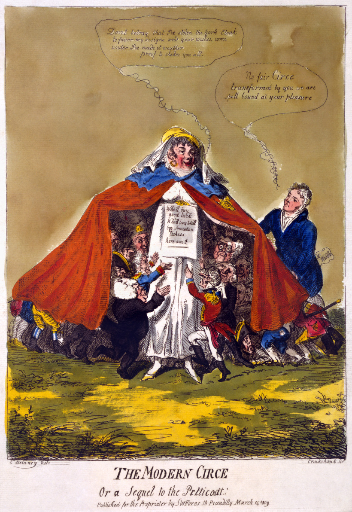
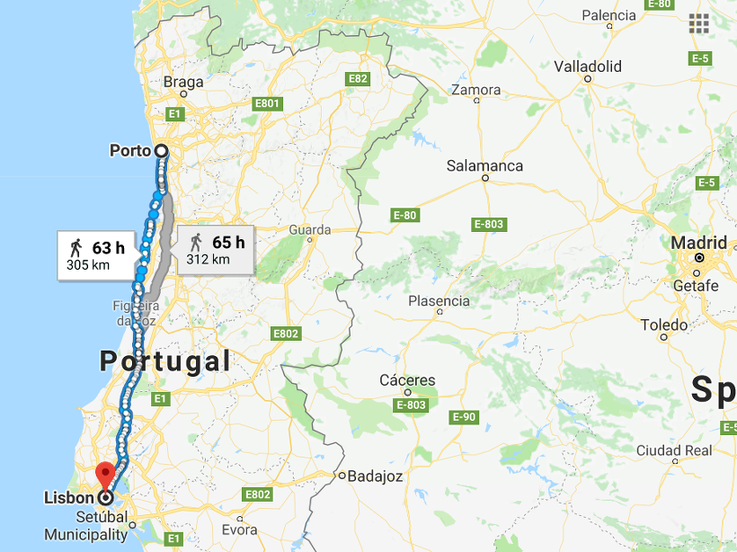

신문과 돈 - 포르투(Porto) 전투 2편
게시: 2018-01-27T13:19:43+09:00
1808년 9월, 비메이로(Vimeiro) 전투에서 쥐노가 이끄는 프랑스군을 격파하고도 어이없는 신트라(Sintra) 협상으로 쥐노와 그의 군단을 안전하게 프랑스로 호송해보낸 사건 덕분에 영국으로 소환되었던 영국군 지휘관들 중 하나였던 웰슬리는, 그 협상에 대해서는 책임이 없다는 것을 어렵지 않게 인정받을 수 있었습니다. 하지만 다시 지휘권을 부여받는 것은 쉬운 일이 아니었고, 웰슬리는 이베리아 반도로 돌아오기 위해 여기저기에 줄을 당기고 있었습니다.
그러나 그건 쉽지 않았습니다. 일단 영국은 돈 들어가는 싸움질을 하고 싶어하지 않았습니다. 나폴레옹과 영국 사이에 바다가 있고 로열 네이비가 그 위에 떠 있는 이상 당장 침공 받을 염려가 없는데, 구태여 위험한 유럽 대륙으로 기어들어갈 이유가 없다는 생각이었습니다. 이미 무어 경이 이끄는 원정군이 한번 들어갔다가 개박살이 나서 거지꼴로 돌아온 마당에, 실패를 되풀이할 이유가 없었지요. 그러나 두가지 이유 때문에 영국은 결국 포르투갈에 원정군을 추가 파견하기로 합니다. 신문과 돈이었습니다.

(영국군 총사령관인 요크 공작 프레더릭 왕자입니다. 오스트리아나 프로이센이 프랑스에게 연전연패 했던 이유 중 하나가 지휘관을 실력이 아니라 세습 신분에 따라 임명했기 때문이었습니다. 영국 육군도 똑같은 문제를 안고 있었습니다. 영국 해군은 육군과는 달리 매관매직의 전통이 없었습니다.)
당시 영국군 총사령관은 당시 국왕 조지 3세(George III)의 둘째 아들이자 섭정공의 동생이었던 요크 공작 프레더릭(Prince Frederick, Duke of York and Albany)이었습니다. 첫째 아들은 작위와 재산을 물려받고, 둘째 이하는 군에 입대한다는 전통을 따라 17살이라는 어린 나이에 대령 계급으로 군에 입대한 그는 하노버의 괴팅겐 대학에서 공부를 하면서도 2년 만에 소장, 다시 2년 만에 중장 계급으로 초고속 승진을 거듭하여 전체 영국군 총사령관(Commander in Chief)가 되었습니다. 당연히 업적은 별로 없었던 그는 그래도 이런저런 개혁안을 채택하면서 영국 육군의 발전에 이바지하는가 싶었는데, 그만 대형 사고에 휘말립니다. 그의 정부였던 평민 출신 미녀 메어리 앤 클라크(Mary Anne Clarke)가 그의 비호 아래 영국 육군 장교직을 팔아먹었다는 스캔달이 1809년 3월 15일에 터진 것입니다.

(메어리 앤 클라크는 18살의 나이에 클라크라는 사람과 결혼했으나, 남편 사업이 잘 안되어 파산하자 곧장 이혼, 이후 사교계에 뛰어들어 그 미모와 교양을 바탕으로 요크 공작의 눈에 든 여자였습니다. 스캔달이 터지던 시점의 나이는 33세였습니다.)
원래 영국 육군 장교직은 공식적으로도 돈을 주고 사는 것이었습니다. 이를 매관매직 제도(purchase system)라고 하지요. 그러나 이건 일종의 사교 클럽 회원권처럼 장교단끼리 사고 팔아 비슷한 계급의 신사들만 장교가 될 수 있도록 하는 일종의 필터링 장치일 뿐, 특정 개인의 주머니를 채우고자 운영되는 제도가 아니었습니다. 원래 요크 공작이 정부인 클라크에게 넉넉한 생활비를 제공해야 했는데 그러지 못하자, 대신 그런 매관매직 관련한 뇌물을 받을 수 있도록 눈감아 주었다는 비난이 영국 언론과 시민 사회를 들끓게 했습니다. 결국 이 스캔달이 터져나온 뒤 10여 일만에 요크 공작은 총사령관직을 내놓아야 했습니다. 그럼에도 비난 여론은 쉽게 가라앉지 않았고, 요크 공작 개인 차원이 문제가 아니라 왕정, 그리고 더 나아가 귀족 위주의 영국 지배 구조를 뒤흔드는 스캔달로 번질 태세였습니다.

(그래도 영국이 나폴레옹 치하의 프랑스나 오스트리아에 비해 훨씬 근대화된 나라였다는 점은 이 만화를 통해서도 나옵니다. 언론의 자유가 있었던 것이지요. 이 만화는 Isaac Cruikshank라는 만화가의 작품이고, 여기서 메어리 클라크는 현대판 키르케로 나와 요크 공작의 망토를 입고 사람들에게 행운과 승진 등을 사라고 외치고 있습니다.)
거기에 돈 문제도 있었습니다. 당시 오스트리아는 막 제5차 대불동맹전쟁을 터뜨리기 직전이었습니다. 오스트리아는 영국에게 몸빵으로 도와줄 것이 아니라면 전쟁 자금으로 5백만 파운드(현재 가치로 약 1조2천7백억원)를 요구하고 있었습니다. 결국 이 전쟁을 패배로 마무리한 오스트리아가 나폴레옹에게 바쳐야 했던 전쟁 배상금이 8천5백만 굴덴(현재 가치로 약 6300억원)에 불과했던 것을 감안하면, 아무리 영국이 돈이 많다고 해도 이건 너무 과중한 액수였습니다. 오스트리아를 부추겨 나폴레옹에게 싸움을 걸려면 5백만 파운드를 내던가, 아니면 아일랜드인들과 스코틀랜드인, 그리고 하노버 독일인들로 구성된 영국 육군을 동원하여 몸빵을 해줘야 했습니다.

(캐슬레이 자작 로버트 스튜어트입니다. 그는 메테르니히와 함께 비엔나 체제의 주요 인물 중 하나였습니다.)
이렇게 신문과 돈 문제로 골치를 썩이던 전쟁성 장관(Secretary of State for War and the Colonies) 캐슬레이 경(Robert Stewart, Viscount Castlereagh)에게 작전 계획서 하나가 날아듭니다. 작성자는 아서 웰슬리였고, 그 내용을 한줄 요약하면 포르투갈의 산악 지대를 방어선으로 삼으면 프랑스군으로부터 리스본을 지킬 수 있다는 것이었습니다. 그 문서에서 캐슬레이 경의 눈을 사로잡은 것은 다름 아닌 1년간의 예상 작전 비용이었습니다. 1백만 파운드(약 2천5백억원)라고 적혀 있었던 것입니다. 캐슬레이 경의 머리가 재빨리 돌아갔습니다. 무려 4백만 파운드를 절약하면서 요크 공작 스캔달로 달아오른 언론의 관심을 다시 나라 밖으로 돌릴 절호의 기회였던 것입니다. 곧 포르투갈 원정대가 결정되었고, 그 총지휘관으로는 아서 웰슬리가 지명되었습니다. 물론 거기에는 그의 형인 웰슬리 후작(Richard Colley Wellesley)이라는 든든한 배경이 큰 역할을 했지요. 흔히 영국 해군에 비해 영국 육군이 너무나 무능한 모습을 보였던 이유 중 하나로 뽑히는 것이 바로 영국 육군의 매관매직 제도입니다만, 가끔 예외가 생기는 것은 어디에나 있는 일입니다. 귀족 위주로 돌아가느라 형편없었던 영국 육군에 생긴 예외는 바로 아서 웰슬리였습니다.

(리스본에서 포르투까지의 거리는 페롤에서 포르투까지의 거리와 거의 똑같습니다.)
확실히 웰슬리는 기존의 영국군 지휘관과는 달랐습니다. 그는 4월 22일 배에서 내리자마자 진격 준비를 시작했습니다. 어디로요 ? 당연히 포르투였지요. 그가 포르투가 면한 도우루(Douro) 강 남안에 나타난 것이 5월 10일이니 불과 18일만에 무려 300km가 넘는 거리를 진격한 것입니다. 불과 3일 간의 준비하고 하루 평균 20km씩 15일을 행군한 셈인데, 실제로는 준비 기간이 더 길었고 행군은 더 빨랐습니다. 마지막 단계 120km는 불과 4일만에 주파했으니까요. 이건 프랑스군 기준으로 볼 때도 정말 놀라운 수준이었습니다. 영국군과는 달리 술트의 프랑스군은 몹시 지치고 재정비가 절실한 상태였다고는 해도, 비슷한 거리인 페롤에서 포르투로의 진격에, 술트는 무려 2달이 걸렸다는 점을 감안하면 더욱 그렇습니다.
이렇게 영국군스럽지 않은 쾌속 행군을 마친 웰슬리를 기다리는 것은 건곤일척의 싸움을 위해 포진한 술트 원수, 영국식으로 킹 니콜라스(King Nicolas)가 아니었습니다. 바로 넘실넘실 깊고 푸른 물이 흐르는 드넓은 도우루 강이었습니다. 그리고 도우루 강 남안에는 정말 신기하게도 조각배는 커녕 나무통 하나 남아 있지 않았습니다. 웰슬리와 그의 영국군은 여기서 그만 어이없이 발이 묶이는 듯 했습니다. 영국군에게 동쪽에서 귀인이 찾아온 것은 바로 이때였습니다.
Source : http://www.napoleon-series.org/military/virtual/c_Oporto.html
https://en.wikipedia.org/wiki/Prince_Frederick,_Duke_of_York_and_Albany
https://en.wikipedia.org/wiki/Robert_Stewart,_Viscount_Castlereagh
https://en.wikipedia.org/wiki/Mary_Anne_Clarke